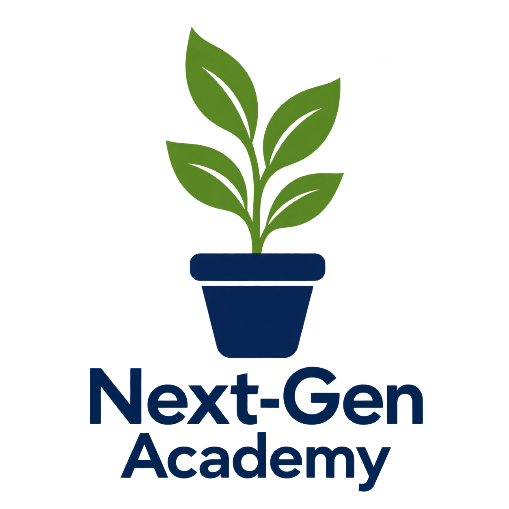
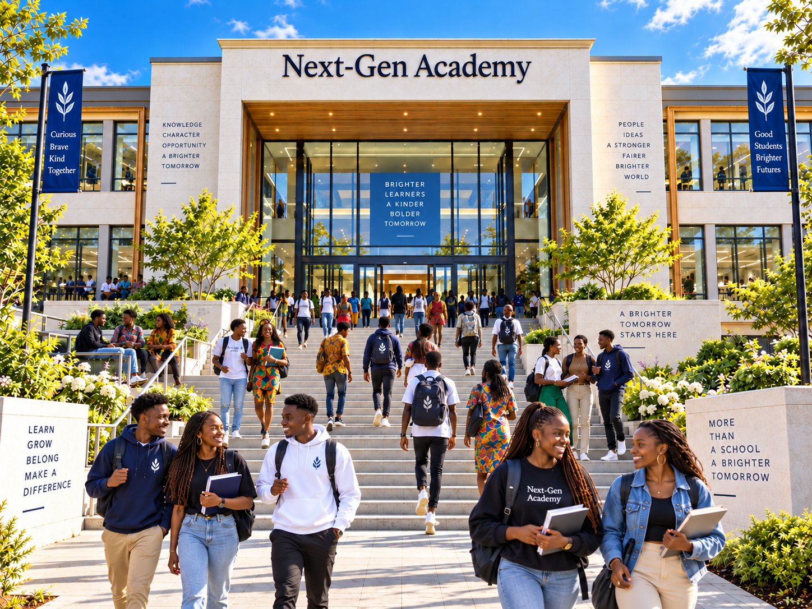

Next-Gen Academy
Comprehensive WASSCE study support for Secondary and High School students across West Africa — built to strengthen what you're learning in class, one subject at a time.
Every self-assessment score is tracked throughout the year. At the end of each academic year, the three top-performing students are awarded prizes and celebrated right here on the home page.
Recommended textbooks and study guides, priced in your local currency.
The West African Examinations Council (WAEC) curriculum in The Gambia provides a structured educational framework for secondary school students preparing for the West Africa Senior School Certificate Examination (WASSCE). This curriculum encompasses a broad range of subjects designed to meet the educational needs of students across various disciplines.
English Language (reading, writing, comprehension, grammar and oral skills), Mathematics (arithmetic, algebra, geometry, statistics and problem-solving), Integrated Science (biology, chemistry and physics), and Social Studies (citizenship, governance, history, geography and cultural studies relevant to The Gambia and the wider world).
Science stream: Biology, Chemistry, Physics, Agricultural Science, Environmental Science. Arts & Humanities stream: Literature in English, History, Geography, Government, Religious Studies. Business stream: Accounting, Business Studies, Economics, Office Management. Technical & Vocational options: Electrical Installation, Building Construction, Fashion Design, and related trades.
Continuous internal assessment throughout the year contributes to overall performance, alongside the final WASSCE examination administered by WAEC — results that are critical for entry into tertiary institutions.
The WAEC curriculum in Ghana guides secondary education, preparing students for the WASSCE, and includes a wide range of subjects allowing specialization according to interests and future career paths.
English Language, Mathematics, Integrated Science (biology, chemistry, physics and environmental science), and Social Studies.
General Arts: Geography, History, Literature in English, Religious Studies, Government, French or a Ghanaian Language, Visual Arts. General Science: Physics, Chemistry, Biology, Elective Mathematics, Environmental Science. Business: Accounting, Business Management, Economics, Office Management, Typing. Technical & Vocational: Electrical Installation, Mechanical Engineering, Building Construction, Fashion Design, Hospitality studies.
Continuous school-based assessment throughout the year, plus the final WASSCE examination administered by WAEC.
The WAEC curriculum in Nigeria provides a comprehensive framework for secondary education, guiding students toward the WASSCE and allowing specialization based on interests and future aspirations.
English Language, Mathematics, General Science (biology, chemistry and physics), and Social Studies (citizenship, governance, history, Nigerian politics, geography and culture).
Arts: Literature in English, History, Geography, Government, Music, Visual Arts, Religious Studies. Sciences: Biology, Physics, Chemistry, Elective Mathematics, Agricultural Science, Geography. Business Studies: Accounting, Business Studies, Economics, Office Practice, Commerce. Technical & Vocational: Electrical Installation and Maintenance, Mechanical Engineering, Building Construction, Woodwork, Fashion and Clothing.
Continuous internal assessment throughout the year, plus the final WASSCE administered by WAEC — critical for admission into tertiary institutions.
The WAEC curriculum in Sierra Leone provides a comprehensive education framework for secondary school students preparing for the WASSCE, spanning a broad range of subjects and disciplines.
English Language, Mathematics, Integrated Science (biology, chemistry and physics), and Social Studies (citizenship, governance, history, geography and cultural studies relevant to Sierra Leone and the world).
Sciences: Biology, Chemistry, Physics, Agricultural Science, Environmental Science. Arts: Literature in English, Geography, History, Government, Music, Visual Arts, Religious Studies. Business Studies: Accounting, Business Studies, Economics, Commerce, Office Practice. Technical & Vocational: Building and Construction, Mechanical Engineering, Electrical and Electronic Engineering, Home Economics.
Continuous internal assessment throughout the year, plus the final WASSCE administered by WAEC.
The WAEC curriculum in Liberia serves as an educational framework for secondary school students preparing for the WASSCE, offering a wide range of subjects tailored to various fields of study.
English Language, Mathematics, Integrated Science (biology, chemistry and physics), and Social Studies (citizenship, governance, history, geography and the social dynamics of Liberia and the world).
Science & Technology: Biology, Physics, Chemistry, Agricultural Science, Computer Studies. Arts & Humanities: Literature in English, History, Geography, Government, Religious Studies, Music and Arts. Business: Accounting, Business Studies, Economics, Office Management. Technical & Vocational: Electrical Installation, Mechanical Engineering, Building Construction, Fashion Design, Hospitality and Catering.
Continuous internal assessment throughout the year, plus the final WASSCE administered by WAEC — vital for admission to tertiary institutions.
Next-Gen Academy has carefully put together a comprehensive set of tutorials designed to help Secondary and High School students better understand and master the subjects they are learning at school, leading to a successful completion of their secondary education with good results in the West African Senior School Certificate Examination (WASSCE) — thereby opening the way for entry into university or college, or taking on employment with knowledge and confidence in developing a career.
The tutorials are therefore supplementary (extra) learning resources and must not be used as replacements for classroom attendance in your various schools.